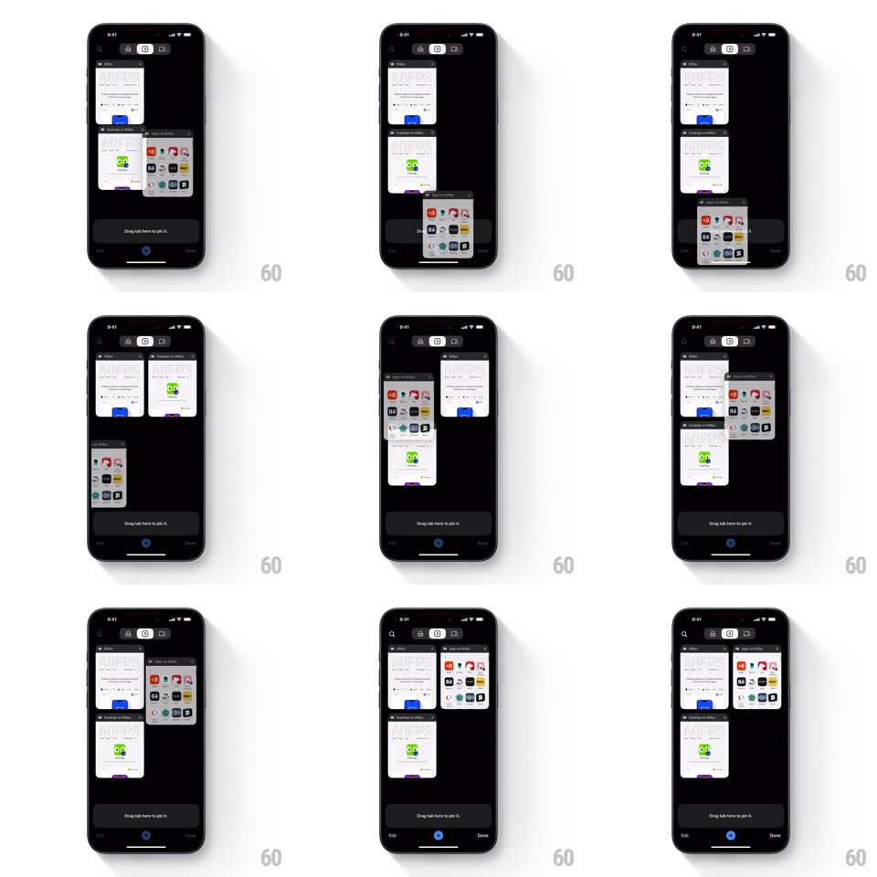

Media
Frame-by-frame

Rebuild this interaction 1:1: Chrome mobile's tab rearrange - in the dark tab grid, long-pressing a tab card lifts it, and dragging it across the grid makes the other cards slide out of the way in real time, reflowing around the dragged card until it drops into its new slot.

Rebuild this interaction 1:1: Chrome mobile's tab rearrange - in the dark tab grid, long-pressing a tab card lifts it, and dragging it across the grid makes the other cards slide out of the way in real time, reflowing around the dragged card until it drops into its new slot. ## Integration Integration: stack-agnostic spec - springs given as stiffness/damping, timed motions as duration + curve; map every value to your framework and animation library of choice. ## Scene Dark tab-switcher grid: two columns of tab cards (site thumbnails), top bar with count and actions, "Drag tab here to pin it" bar appearing at the bottom during drags, Edit / Done footer. ## Motion spec Pattern: grid reflow drag-and-drop. - Long-press: the card lifts (scale 1.04, shadow deepens, spring ~380/22, 180ms) with a haptic tick; it follows the finger 1:1. - As the dragged card crosses each grid position, the affected cards slide to their new slots (spring ~340/26, 250ms each, tight overlap) - the grid reflows live around the hole the dragged card would fill. - Cards shuffle in reading order: displaced cards move one slot over, cascading through the grid. - Drop: the card settles into the open slot (spring ~360/26, 250ms) and the shadow releases; a small settle bounce confirms. - Cancel (drag out of the grid or second tap): the card springs home and the grid reflows back. ## Calibration - Reflow happens continuously while dragging - cards never wait for the drop to move. - The dragged card renders above everything (z-top) with its shadow intact. ## Reduced motion Cards crossfade to new positions on drop; no live reflow. ## Don't miss - The pin bar appears at the bottom during the drag but arranging targets the grid itself - two different drop zones, one gesture. - The reflow springs are fast and tight - a shuffle, not a cascade.